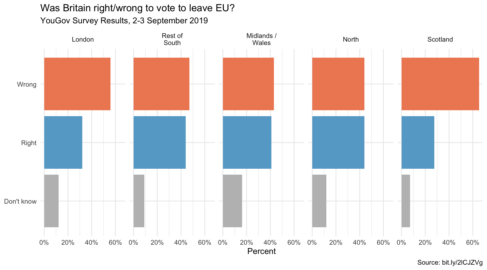

library(tidyverse)
library(skimr)
library(ggrepel)
library(hrbrthemes)DANL 399: Data Visualization and Presentation
Make-up Midterm Exam
Honor Pledges
I solemnly swear that I will not cheat or engage in any form of academic dishonesty during this exam.
I will not communicate with other students or use unauthorized materials.
I will uphold the integrity of this exam and demonstrate my own knowledge and abilities.
By taking this pledge, I acknowledge that academic dishonesty undermines the academic process and is a violation of the trust placed in me as a student.
I accept the consequences of any violation of this promise.
- Student’s Name:
- Student’s ID:
- Student’s Signature:
Load R packages
- Here we are loading all the R packages we need for the Midterm Exam I, so that you do not need to load the R packages in your code.
Question 1
The following describes the context of the data.frame, banks.
In the 1920s, Caldwell and Company, a prominent Southern banking chain, thrived. By the time of the Great Crash in 1929, Caldwell & Company was a regional investment banking powerhouse doing $100,000,000 a year in securities sales alone. However, mismanagement and the stock market crash of October 1929 brought the Caldwell empire down in November 1930, triggering bank failures across several states.
Banks fundamentally rely on trust. They lend more than they hold, assuming not all depositors will withdraw simultaneously. But when confidence wanes, as in the 1930s, bank runs can ensue. Caldwell’s collapse notably impacted trust in the South, leading to a banking crisis in Mississippi in December 1930.
Economists debate the role of monetary policy during such crises. The Federal Reserve, divided into 12 districts, had varied responses. The Atlanta Fed actively extended loans to struggling banks, whereas the St. Louis Fed took a more cautious approach. Mississippi, straddling these districts, became a study in contrasting policies.
Within 4 weeks of Caldwell’s collapse, the Atlanta Fed had increased bank lending by about 40% in the Sixth District, where policy was to increase lending. In the same period, bank lending by the St. Louis Fed in the Eighth District fell only about 10%, where policy was to do little or even restrict lending.
Beginning in July 1931, the St. Louis Fed abandoned tight money and started lending to troubled banks freely. In other words, after 1931, Federal Reserve policy in the two districts was again similar, with both regional Feds willing to provide liquidity with a free hand. Moreover, while the Depression was far from over in 1932, the Caldwell crisis had petered out and withdrawals had returned to pre-crisis levels. Given the two regional Feds’ common readiness to lend as the need arose, trends in bank activity should again have been common after 1931.
The followings are the data frames for Question 1.
banks_all <- read_csv('https://bcdanl.github.io/data/banks_ms_all.csv')Description for Variables in banks_all
year: Yearmonth: Monthday: Daybib6: The number of banks in business in the Sixth Districtbib8: The number of banks in business in the Eighth District
banks <- read_csv('https://bcdanl.github.io/data/banks_ms.csv')Description for Variables in banks
year: Yearmonth: Monthday: Daydistrict: Districtbib6: The Sixth Districtbib8: The Eighth Districtcounterfactual: The Sixth District Counterfactual. The counterfactual evolution of the number of banks in the Sixth District if the same number of banks had failed in that district after 1930 as did in the Eighth.
n_banks: The number of banks in business
Q1a
- Provide your R code to create a new data.frame,
bank7_1, which contains the observations with only July 1st for each year in the data.framebanks_all.
Q1b
- Provide your R code to calculate the median, mean, and standard deviation of the number of banks in business in each district in the data.frame
banks_all.
Q1c.
- Provide the ggplot code to replicate the following ggplot figure that describes how the distribution of the number of banks in business varies by district.
- Blue color corresponds to the Sixth district.
- Red color corresponds to the Eighth district.
Q1d.
- Provide the ggplot code with the data.frame
banksto replicate the following ggplot figure that describes the yearly trend of the number of banks in business for each district.- The dotted line is from the observation with “counterfactual”
districtvalue . - The logical condition
district != "counterfactual"returnsTRUEif the value ofdistrictis not equal to “counterfactual”. - The logical condition
district != "counterfactual"returnsFALSEif the value ofdistrictis equal to “counterfactual”. - The number of banks in business in this figure was measured on July 1st in each year.
- The dotted line is from the observation with “counterfactual”
Q1e.
- Considering the context of the data.frame,
banks, and the ggplot figure in Q1d, make a detailed comment on the following questions:- Describe and compare the yearly trend of the number of banks in business depicted in the ggplot figure in Q1d.
- What would be the effect of the monetary policy on bank failures in Mississippi in July 1934?
- In the given ggplot figure in Q1d, point out the magnitude of such effect.
Question 2
The following is the data.frame gapminder from the gapminder R package for Question 2.
library(gapminder)
gapminder <- gapminder::gapminderVariable description
country: factor with 142 levelscontinent: factor with 5 levelsyear: ranges from 1952 to 2007 in increments of 5 yearslifeExp: life expectancy at birth, in yearspop: population
gdpPercap GDP per capita (US$, inflation-adjusted)
Q2a.
- Provide ggplot code to replicate the following visualization that describes (1) the time trend of
log10(gdpPercap)for eachcountryand (2) the time trend oflog10(gdpPercap)for eachcontinent.- The time trend of
log10(gdpPercap)for eachcontinent, depicted by the blue curve, is from the prediction based on the data points ofyearandlog10(gdpPercap). - The time trend of
log10(gdpPercap)for eachcountry, depicted by the “grey” curve, is from the data points ofyearandlog10(gdpPercap)for thatcountry.
- The time trend of
Q2b.
- Interpret the visualization in Q2a.
Q2c.
- Provide ggplot code to replicate the following visualization that describes (1) the relationship between
log10(gdpPercap)andlifeExpinyear2007, excluding thecontinent“Oceania”.- The size of dots varies by
pop.
- The size of dots varies by
Q2d.
- Interpret the visualization in Q2c.
- In your interpretation, please explain the deviation of Nigeria from the overall relationship between
log10(gdpPercap)andlifeExpin Africa.
- In your interpretation, please explain the deviation of Nigeria from the overall relationship between
Question 3
The followings are the data.frames for Question 3.
titanic_1 <- read_csv("https://bcdanl.github.io/data/titanic.csv")Description for Variables in titanic_1
Class: Social classSex: SexAge: AgeSurvived: Survival status from the Titanic disaster.
titanic_2 <- read_csv("https://bcdanl.github.io/data/titanic_2.csv")Description for Variables in titanic_2
pclass: Social classsex: Sexage: Agesurvived: Survival status from the Titanic disaster.
Q3a.
- Provide ggplot code with the
titanic_1data.frame to replicate the following visualization that describes how the distribution ofSexvaries bySurvived,Age, andClass.
Q3b.
Make a detailed comment on the visualization in Q3a.
Q3c.
- Provide ggplot code with the
titanic_2data.frame to replicate the following visualization that describes how the distribution ofagevaries bysurvived,pclass, andsex.- Use the following colors:
#4c3642and#d399e7. - The number of bins in each subplot is 25.
- Use the following colors:
Q3d.
Make a detailed comment on the visualization in Q3c.
Question 4
In September 2019, YouGov survey asked 1,639 GB adults the following question:
In hindsight, do you think Britain was right/wrong to vote to leave EU?
- Right to leave
- Wrong to leave
- Don’t know
The data from the survey is in brexit.csv.
brexit <- read_csv('https://bcdanl.github.io/data/brexit.csv')Q4a
- Replicate the following visualization

Q4b
- Replicate the following visualization
- How is the story this visualization telling different than the story the plot in Q4a?

Q4c
- First, calculate the proportion of wrong, right, and don’t know answers in each region and then plot these proportions (rather than the counts) and then improve axis labeling.
q4 <- brexit |>
group_by(region, opinion) |>
summarise(n = n()) |>
mutate(tot = sum(n),
prop = n / tot ) - Replicate the following visualization
- How is the story this visualization telling different than the story the plot in Q4b?

Q4d.
Recreate the same visualization from the previous exercise, this time dodging the bars for opinion proportions for each region, rather than faceting by region and then improve the legend.
- How is the story this visualization telling different than the story the previous plot tells?